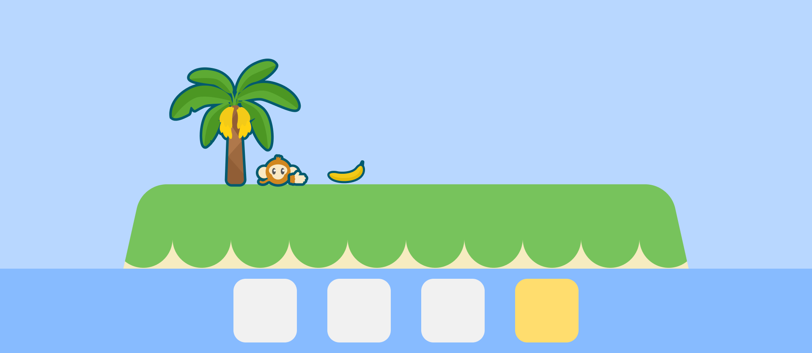
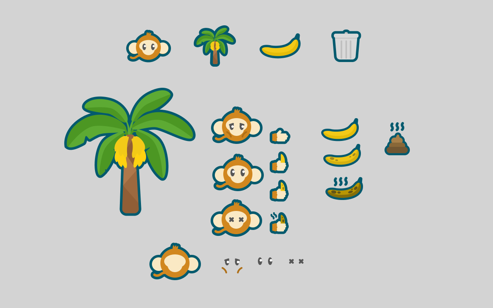
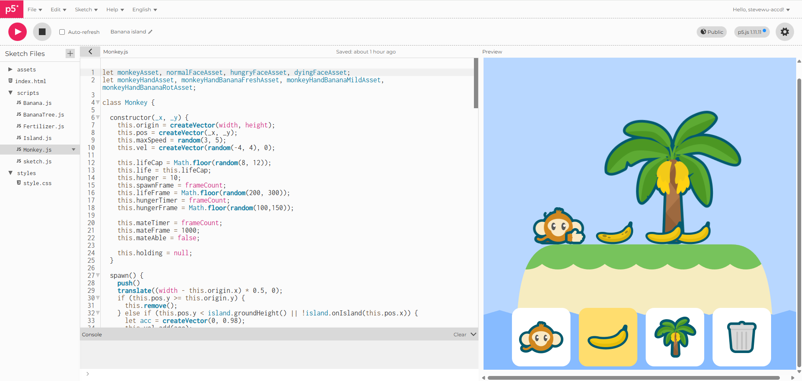

Banana Island: P5js Ecosystem Simulation by Steve Wu | GIXD 503 Creative Prototyping | ACCD 29 November, 2025
Introduction
Welcome to another week of my P5.js exploration! This time, I made a small ecosystem on an Island. In this article you can see the documentation for how I made this animation using Objects-oriented system. You can also view the code here.
Step 1: UML diagram & Flow Chart
First, I brainstormed how the ecosystem will operate and cycle on its own. What kind of items/beings will be in there and how would they affect each others.
With these questions in mind, I created a UML diagram.
 UML Diagram of the ecosystem
UML Diagram of the ecosystem
I decided to put some monkeys, bananas and banana tress on a island. Monkeys can live by eating bananas and bananas trees can live by fertilizing on monkey's waste.
Then, for more detailed logic in the system, I created flowcharts showing how the monkeys and bananas would behave in the system.
 Flow chart of Monkey's behavior
Flow chart of Monkey's behavior
 Flow chart of Banana's behavior
Flow chart of Banana's behavior
This makes an early buleprint for the ecosystem.
Step 2: Prepare the Assets
For the assets, I eventually decided to make the ecosystem operate in a 2D space where everything stands on the same ground surface.
I then drew a sketch using Figma to indicate how the island may look like.

Sketch of the islandI then made every other assets following this style.

Assets overviewNow we can start coding the system!
Step 3: Objects scripts
Island.js
In order to have a ground for everything to stand on. I started by coding the Island.
Most of this script is to create the visual of the island. However there is a few useful functions such as onIsland(), that will return a boolean representing if the input location is on the island or not.
 Island.js script
Island.js script
Now I can construct the island by giving it a width and a height (Later I made the island width proportional to the width and height stayed static).
Banana.js & Fertilizer.js
Next, I looked at Banana and Fertilizer's script.
Because the bananas would drop from the tree, I implemented its movement by giving it a downward acceleration and a random side-way velocity.
I also implemented a timer behavior that will lower the banana's "life" and change it color based on the frameCount. Same goes for the Fertilizer.
It also has a chance to grow into a tree if there's fertilizer nearby. The chance is scaled by how many existing trees near it, the more trees the lower the chance.
 Banana.js script
Banana.js script
Now I can spawn bananas by inputing x & y coordinates.
BananaTree.js
After bananas, it's time to look at the tree's script.
The main function of a banana tree is to grow banana. So I used a similar timer behavior to have bananas randomly spawn from top of the tree.
I also made the trees vary by size, speed to bear bananas and lifelength.
 BananaTree.js script
BananaTree.js script
We have trees that grow bananas now.
Monkey.js
Lastly, the Monkey's script
Monkeys have a special movement logic. Each moneky has a random maxspeed, once spawned it will accelerate to max speed in one direction. When it reaches the edge of the island, it turn to the other direction and keeps moving.
For the monkey's life, I used the same timer logic. On top of that, they regenerate health by eating to full hunger.
Speaking of eating, the monkeys can pickup bananas and eat them to gain hunger value. When they eat, they also poop, which becomes fertilizer for bananas to grow.
If they are not hungry, they can hold the banana and move around untill hungry or finding a better banana.
Because of this motion, monkey can move bananas around and potentially spread banana trees across the island.
Lastly, if monkeys are full and health, they can mate and born babys.
 Monkey.js script
Monkey.js script
With Monkeys inplace, the island is finally alive.
Step 4: UIs
After the island can function on it's own. Users should be able interact with it.

Functioning islandI added buttons for user to spawn Monkeys, Bananas or BananaTrees on the island. I also add a clear all button in case things get out of hand.
Using these buttons, you can started building your own little monkey island.
Conclusion
Have fun watching the little system run!
You can also access it here.